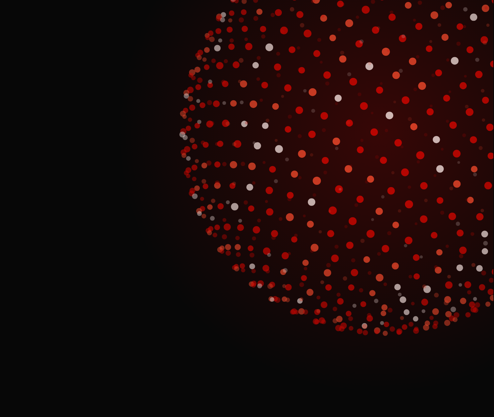

Studio Present
2026 – jelenlegFront-End Gyakornok
Korábban 2 hetes front-end gyakorlat ugyanitt (2023).

Web- és játékfejlesztés · Szabadka, Szerbia
Informatika szakos hallgató vagyok a Szabadkai Műszaki Szakfőiskolán, aki szenvedélyesen érdeklődik a web- és játékfejlesztés iránt. Már középiskolás éveim óta a technológia világában építem a tudásomat, és folyamatosan keresem azokat a kihívásokat, ahol valódi projekteken keresztül fejlődhetek.
Front-End Gyakornok
Korábban 2 hetes front-end gyakorlat ugyanitt (2023).
Code Analytics
Rocksmith-stílusú gitártanuló játék, amely mikrofonon keresztül valós időben felismeri a lejátszott hangokat és akkordokat.
JavaScript · Web Audio API · SVG
Minimalista, underground stílusú ételfutár alkalmazás, amelyet jelenleg Palicson használnak.
React · TypeScript · Vite · Supabase
Személyes portfólió interaktív 3D részecske-háttérrel.
React · TypeScript · three.js